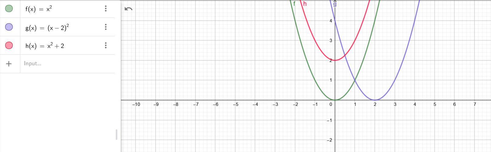
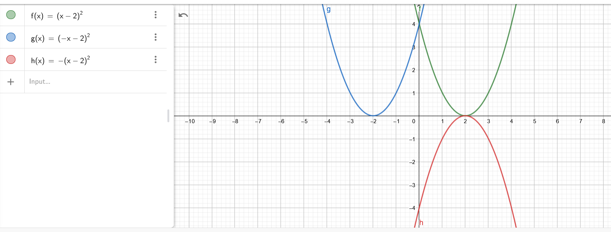

Verschuiving
y-as (vertikaal) g(x)=f(x)+a
a > 0 --> boven || a < 0 --> onder
x-as (horizontaal) g(x)=f(x+a)
a < 0 --> rechts || a > 0 --> links

Spiegeling
y-as g(x) = f(-x)
x-as g(x) = -f(x)

Uitrekken
y-as g(x) = a*f(x)
a > 1: uitrekken 0 < a < 1: inkrimpen
x-as g(x) = f(a*x)
a > 1: inkrimpen 0 < a < 1: uitrekken
(Dit effect lijkt vreemd met paraboolfuncties (x²) dus gebruik sinus voor illustratie!
Een hoek van 360 graden = 6,28 rad = 2pi
Oefeningen:
1.2 functievoorschrift
4) h(x) = x²+7
5)
6)
7)
pas op met vereenvoudigen van mintekens & machten/vierkantswortels
9)
1)
2) niet gemaakt in les
3)
4) niet gemaakt in les
5) niet gemaakt in les
6)
7)
(Je mag in principe ook met p werken ipv o' & o". Zorg gewoon voor differentiatie bij de tussenstappen)